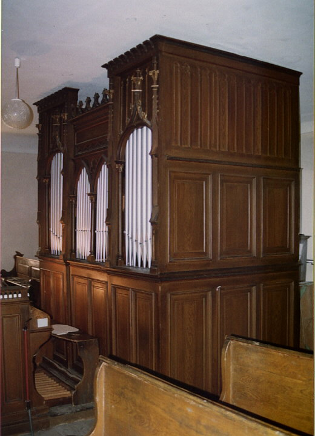
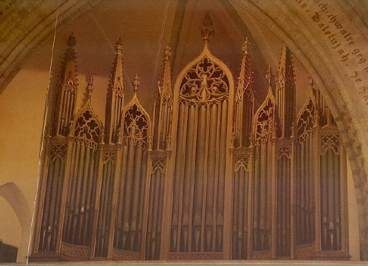
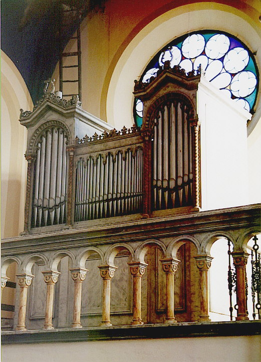

Varhany z Rychnova nad Kněžnou
Kostel sv. Havla (děkanský) Nástroj postavil v roce 1905 Josef Hubička a je dodnes zachován v nezměněném stavu. Je umístěn v jednodílné novogotické skříni, samostatně stojící hrací stůl je předsunut před skříň. Nástroj má mechanicko pneumatickou trakturu (Barkerova páka) a kuželkové vzdušnice. Měch se zásobníkem zařízený na šlapání je umístěn mimo skříň, v rohu kůru. Dispozice: |
| Manuál C-f3 (54 tónů) | Pedál C-d1 (27 tónů) |
| Principál | 8´ | Subbas | 16´ |
| Oktáva | 4´ | Violonbas (otevřený) | 16´ |
| Gamba | 8´ | ||
| Flauta | 8´ | ||
| Bourdon | 16´ | ||
| Salicionál | 8´ | ||
| Flétna | 4´ | ||
| Doublette | 22/3' | ||
| Mixtura (2 spodní řady má společné s Doublettem) | 22/3' | ||
| Anglický roh (kombinace Gamba + Flauta) | 8´ | ||
| Tremolo (dodatečně připojeno) |
Oktávová spojka, pedálová spojka, kolektivy p, mf, f, ff |
Kostel Nejsvětější Trojice (zámecký) Varhany postavil v r. 1843 Georg Spanel mladší z Rokytnice v Orlických horách. Traktura je mechanická, vzdušnice zásuvkové. Hrací stůl je samostatný. Má dva manuály, s inverzními klaviaturami. Dispozice: |
| I. Manuál C-f3 (54 tónů) |
II. Manuál Positif C-f3
(54 tónů) |
Pedál C-c1 (25 tónů) | |||
| Principal-discant | 16´ | Principal | 8´ | Subbass |
16´ |
| Bourdunflaut | 16´ | Copel | 8´ | Violonbass |
16´ |
| Octav | 8´ | Salicet | 8´ | Bourdunbass |
16´ |
| Dolcflaut | 8´ | Octav | 4´ | Principalbass |
8´ |
| Bourdunflaut | 8´ | Waldflaut | 4´ | Cellobass |
8´ |
| Röhrflaut | 8´ | Copel | 4´ | Quintbass |
6´ |
| Quintatön | 8´ | Fugara | 4´ | Octavbass |
4´ |
| Gamba | 8´ | Octav | 2´ | Cornetbass 3 fach |
3´ |
| Octav | 4´ | Rauschquint 2 fach | 11/3' | Trompetbass |
16´ |
| Dolcflaut | 4´ | Mixtur 4 fach | 1´ | Trompetbass | 8 |
| Nachthorn | 4´ | ||||
| Gemshorn | 4´ | ||||
| Quint |
3´ | ||||
| Octav | 2´ | ||||
| Mixtur 6 fach (terciová) | 2´ | ||||
| Cimbel 4 fach (kvintový) | 11/3' | ||||
| Manuálová spojka, pedálová spojka. | |||||
Hřbitovní kaple Proměnění Páně Varhany s největší mírou pravděpodobnosti postavil
v r. 1867 pražský varhanář Karel Vocelka. Jednomanuálový mechanický
nástroj je vestavěn do pseudorománské skříně se dvěma píšťalovými
věžemi. Hrací stůl je zabudován do boku skříně. Klaviatura manuálu
je inverzní, s rozsahem C – f3, 54 tónů , pedálová s rozsahem
C – c1, 25 tónů. Přezmenná spojka manuálu a pedálu je ovládána
táhlem. Tónová traktura manuálu má namísto běžné hřídelové desky hřídelový
rošt vodorovně umístěný pod vzdušnicí. Klínový měch se zásobníkem
umístil varhanář dospodu skříně. Dispozice: |
| Manuál C-f3 (54 tónů) | Pedál C-c1 (25 tónů) |
| Progres harmon. | 3.4.5 | Subbas | 16F |
| Flöte | 4F | (stále znějící, nemá táhlo) | |
| Gedactflöte | 8F | ||
| Principal | 8F | ||
| Octava | 4F | ||
| Coppl manual et pedal ( manubrium) | |||
| Poděkování: Autor stránek děkuje JUDr. Jiřímu Fuksovi, Ph.D., rychnovskému varhaníkovi za zaslání podkladů (fotografií i textu) pro tuto stránku. |